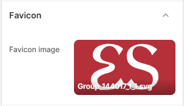
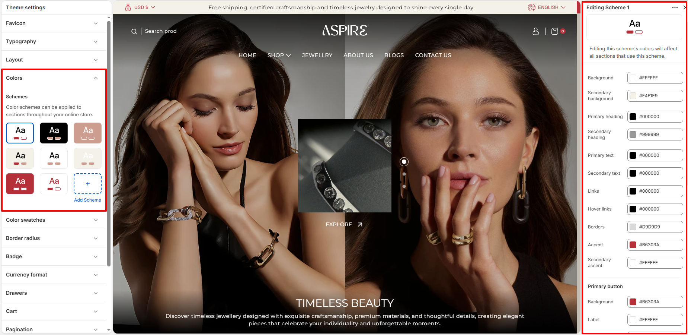
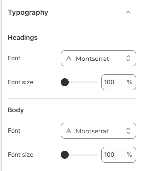
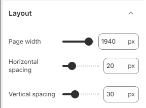
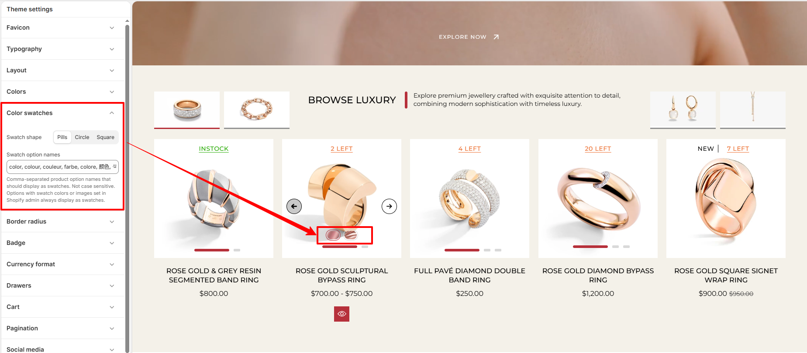
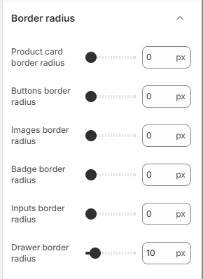
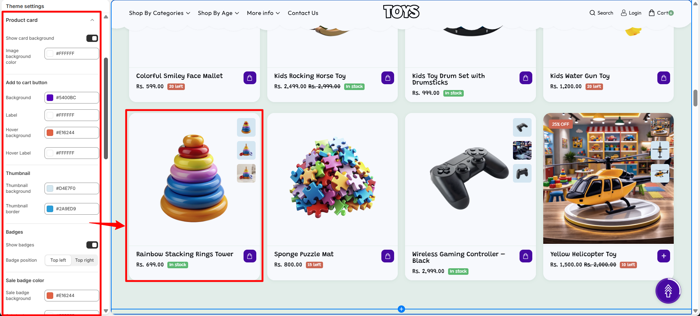
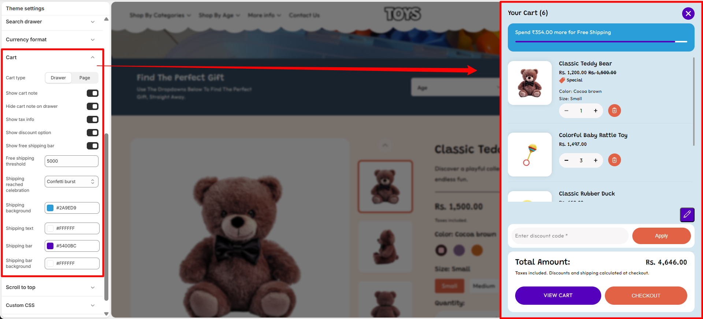

Theme Settings
Theme Settings allow you to control the overall design and common elements of your online store. From this panel, you can customize important aspects such as colors, typography, and other global styling options that appear throughout your website. These settings help maintain a consistent look and feel across all pages while allowing you to easily match your store’s appearance with your brand identity without editing any code.
Favicon
A favicon is a small icon displayed in the browser tab, bookmarks, and browser windows. It helps customers quickly identify your store and improves brand recognition across different browsing environments.

Add a Custom Favicon for Your Store
With Aspire, you can easily upload a custom favicon image that represents your brand identity. Using a recognizable favicon helps create a consistent and professional appearance for your online store.
Steps
- From your Shopify admin, go to Online Store → Themes.
- Click Customize to open the Theme Editor.
- Click on the Theme Settings (gear icon) in the left sidebar.
- Select the Favicon section.
- Under Favicon image, click Select image to upload your favicon file.
- Click Save to apply your changes.
- Favicon image: Upload your store's logo or icon image file (e.g., SVG or PNG) to display as the browser icon.
Colors
One of the most important elements in creating a visually appealing and functional online store is the proper use of color. A well-designed color system helps reinforce your brand identity while also improving the overall shopping experience for your customers. In Aspire, color schemes allow you to define background colors, text colors, button styles, and accent colors that can be applied across different sections of your store.

Customize Your Colors to Match Your Brand
Personalizing your theme’s colors is simple with Aspire. You can easily adjust the available color schemes or click Add Scheme to create a new scheme matching your brand identity.
Steps
- From your Shopify admin, go to Online Store → Themes.
- Click Customize to open the Theme Editor.
- Click on Theme Settings (gear icon) in the left sidebar.
- Select the Colors section.
- Click on an existing color scheme (e.g. Scheme 1) to edit its colors, or click Add Scheme to create a new scheme.
- Click Save to apply your color changes.
- Background: Choose the primary background color for sections using this scheme.
- Secondary background: Choose the secondary background color for cards or subtle background variations.
- Primary heading: Set the color for section headings, titles, and main headings.
- Secondary heading: Set the color for subheadings and secondary text titles.
- Primary text: Set the color for main body text and paragraph content.
- Secondary text: Set the color for secondary body text and metadata.
- Links: Choose the default color for interactive text links.
- Hover links: Choose the color for text links when hovered over.
- Borders: Set the border color used for section dividers, cards, and container borders.
- Accent: Select the primary brand accent color used for badges, highlights, and key UI elements.
- Secondary accent: Select a complementary accent color for secondary visual highlights.
-
Primary button:
- Background: Select the background fill color for primary action buttons.
- Label: Select the text and icon color inside primary action buttons.
Typography
Typography plays a crucial role in defining the visual hierarchy, tone, and readability of your online store. With the Typography settings in Aspire, you can customize the fonts and font scale used for both headings and body text across your entire website.

Customize Your Store Fonts
Aspire allows you to easily personalize the fonts used throughout your store to match your brand style without editing any code.
Steps
- From your Shopify admin, go to Online Store → Themes.
- Click Customize to open the Theme Editor.
- Click on Theme Settings (gear icon) in the left sidebar.
- Select the Typography section.
- Configure your Headings and Body font family and font size settings.
- Click Save to apply your changes.
-
Headings:
- Font: Click Change to select your preferred font family for section titles, headings, and product names (for example: Montserrat).
- Font Size: Adjust the percentage scale slider to increase or decrease heading sizes across your store (for example: 100%).
-
Body:
- Font: Click Change to select the font family used for paragraph text, descriptions, and UI controls (for example: Montserrat).
- Font Size: Adjust the percentage scale slider to scale body text size for optimal readability (for example: 100%).
Layout
The Layout settings allow you to control the overall max container width and grid spacing of your store’s content. You can adjust the Page width to define how wide your website layout appears, and fine-tune horizontal and vertical grid spacing across your store.

Customize Your Store Layout
Aspire allows you to easily customize your store layout by controlling the page container width and the horizontal and vertical grid spacing.
Steps
- From your Shopify admin, go to Online Store → Themes.
- Click Customize to open the Theme Editor.
- Click on Theme Settings (gear icon) in the left sidebar.
- Select the Layout section.
- Adjust the Page width, Horizontal spacing, and Vertical spacing sliders.
- Click Save to apply your changes.
- Page width: Adjust the slider to set the maximum width of your store container layout in pixels (for example: 1940px).
- Horizontal spacing: Adjust the slider to set horizontal gap spacing between grid columns in pixels (for example: 20px).
- Vertical spacing: Adjust the slider to set vertical gap spacing between grid rows in pixels (for example: 30px).
Scroll to Top
The Scroll to Top setting allows you to enable a floating button that helps customers quickly return to the top of the page. This improves navigation, especially on long pages such as collection or product pages.
Scroll to Top Settings
You can control the visibility and appearance of the scroll-to-top button. These options allow you to match the button style with your store design while ensuring easy access for users browsing through your content.
- Show Scroll to Top Button – Enable this option to display the floating scroll-to-top button on the storefront.
- Color Scheme – Choose the color scheme used for the scroll-to-top button so it matches your theme's design.
Steps
- Open the Theme Customizer.
- Click Theme Settings.
- Select Scroll to Top.
- Enable the scroll-to-top button and customize its color scheme and border radius.
- Click Save to apply the changes.

Color Swatches
The Color swatches settings allow you to control the display, shape, and option triggers for color variant swatches across your product listings, collection pages, and product pages.

Customize Swatch Shape and Option Names
With Aspire, you can customize the visual shape of your swatches and define which product variant option names should automatically trigger swatch displays.
Steps
- From your Shopify admin, go to Online Store → Themes.
- Click Customize to open the Theme Editor.
- Click on Theme Settings (gear icon) in the left sidebar.
- Select the Color swatches section.
- Select your preferred Swatch shape (Pills, Circle, or Square).
- Under Swatch option names, enter the comma-separated variant option names (e.g. color, colour, couleur, farbe, colore, material, finish).
- Click Save to apply your changes.
-
Swatch shape: Select the shape style for color swatches displayed across your
store:
- Pills: Displays rounded pill-shaped swatches.
- Circle: Displays circular swatches.
- Square: Displays square swatches with sharp corners.
- Swatch option names: Enter a comma-separated list of product option names (not case-sensitive) that should be rendered as color swatches (for example: color, colour, couleur, farbe, colore, 颜色, 色, material, finish).
Border Radius
The Border radius settings allow you to control the corner roundness of key UI elements across your store, including product cards, buttons, images, badges, input fields, and side drawers.

Customize Element Corner Roundness
Adjusting the border radius slider for each element type lets you choose between sharp corners (0px) or rounded corners to match your store's brand aesthetic.
Steps
- From your Shopify admin, go to Online Store → Themes.
- Click Customize to open the Theme Editor.
- Click on Theme Settings (gear icon) in the left sidebar.
- Select the Border radius section.
- Adjust the border radius sliders for your desired elements.
- Click Save to apply your changes.
- Product card border radius: Adjust the corner roundness of product cards across collection grids and section sliders (for example: 0px).
- Buttons border radius: Set the corner roundness of call-to-action and secondary buttons (for example: 0px).
- Images border radius: Customize corner roundness for promotional and content images (for example: 0px).
- Badge border radius: Set the corner roundness of product badges and status tags (for example: 0px).
- Inputs border radius: Adjust corner roundness for text input fields, search bars, and dropdown controls (for example: 0px).
- Drawer border radius: Set the corner roundness of overlay drawers such as the Cart Drawer and Quick Search Drawer (for example: 10px).
Product Card
The Product Card controls how products are displayed throughout your store, including collection pages, featured product sections, search results, and recommendation blocks. It serves as the primary product preview component, allowing customers to quickly view product details, pricing, availability, and purchase options while browsing.
In the Aspire theme, Product Cards can be customized through a variety of settings that control the card background, add-to-cart button appearance, thumbnail styling, promotional badges, and inventory indicators. These options help create a consistent shopping experience while ensuring product information remains clear and visually appealing.
Product Card Customization Options
- Show card background – Enables a background container behind each product card to improve visual separation and emphasis.
- Image background color – Sets the background color displayed behind product images.
- Add to cart button – Customize the appearance of the add-to-cart button displayed on product cards.
- Background – Defines the default background color of the add-to-cart button.
- Label – Sets the text color used within the add-to-cart button.
- Hover background – Controls the background color displayed when customers hover over the button.
- Hover label – Defines the text color shown when the button is hovered.
- Thumbnail background – Specifies the background color used for product thumbnails and image previews.
- Thumbnail border – Defines the border color displayed around product thumbnails.
- Show badges – Enables promotional and inventory badges on product cards.
- Badge position – Choose whether badges appear in the top-left or top-right corner of the product image.
- Sale badge color – Sets the accent color used for sale badges.
- Sale badge background – Defines the background color displayed for sale badges.
- Sale badge text – Controls the text color displayed inside sale badges.
- Soldout badge color – Sets the accent color used for sold-out badges.
- Soldout badge background – Defines the background color displayed for sold-out badges.
- Soldout badge text – Controls the text color displayed inside sold-out badges.
- Sale badge style – Choose how discounts are displayed, such as a text label or percentage-off format.
- Show inventory – Displays stock availability indicators on product cards.
- In stock background – Sets the background color for the in-stock indicator.
- In stock color – Defines the text color displayed for available products.
- Threshold background – Sets the background color displayed when stock reaches a low-inventory level.
- Threshold color – Defines the text color used for low-stock messages.
- Out of stock background – Sets the background color displayed when a product is unavailable.
- Out of stock color – Defines the text color used for out-of-stock messages.
- Inventory threshold – Specifies the stock quantity at which the low-stock indicator will appear.
Steps
- Open the Theme Customizer.
- Click the Theme Settings icon.
- Select Product Card.
- Configure the card background, button styles, badge settings, thumbnail appearance, and inventory indicators according to your store's branding.

Breadcrumbs
Breadcrumbs provide a navigation trail that helps customers understand their current location within your store. They display the path from the homepage to the current page, making it easier for visitors to navigate between collections, products, and other store pages.
In the Aspire theme, breadcrumbs improve usability by allowing customers to quickly return to previous pages without relying on the browser's back button. This feature enhances navigation, especially in stores with large catalogs and multiple collection levels.
Breadcrumb Settings
- Enable breadcrumbs – Displays a breadcrumb navigation trail at the top of the page, helping customers understand their current location within the store and easily navigate back to previous pages or collections.
Steps
- Open the Theme Customizer.
- Click the Theme Settings icon.
- Select Breadcrumbs.
- Enable or disable breadcrumbs according to your store's navigation requirements.

Pagination
Pagination helps organize large collections of products, blog posts, or search results by dividing content across multiple pages. This improves page performance and makes it easier for customers to browse through content without being overwhelmed by a long list of items.
In the Aspire theme, pagination buttons can be customized to match your store's branding. You can control the appearance of regular page buttons, hover states, and active page indicators to create a consistent and user-friendly navigation experience.
Pagination Customization Options
- Button background – Sets the default background color of pagination buttons.
- Button label – Defines the text color displayed on pagination buttons.
- Button hover background – Controls the background color displayed when customers hover over a pagination button.
- Button hover label – Sets the text color displayed during the hover state.
- Active button background – Defines the background color of the currently selected page button.
- Active button label – Sets the text color displayed on the active pagination button.
Steps
- Open the Theme Customizer.
- Click the Theme Settings icon.
- Select Pagination.
- Customize the button colors, hover states, and active page styles to match your store's branding and navigation design.

Social Media
The Social Media settings allow you to connect your store with your social media profiles. By adding your social profile links in this section, the corresponding social media icons will automatically appear in your store’s footer area.
How It Works
Simply paste the URL of your social media profile into the available input fields. When a valid link is added, the theme automatically displays the matching social media icon in the footer "Get in Touch" section of your storefront. If a field is left empty, its icon will not appear.
- Add Link – Enter the URL of your social media profile in the corresponding field.
- Automatic Icon Display – Once a link is added, the related social media icon will automatically appear in the footer.
- Hide Icon – If no link is provided, that social media icon will remain hidden from the storefront.
Steps
- Open the Theme Customizer.
- Click Theme Settings.
- Select Social Media.
- Paste your social media profile links.
- Click Save to apply the changes.

Search Drawer
The Search Drawer setting controls the appearance and functionality of the search panel that opens when customers click the search icon in the header. This drawer helps customers quickly find products by searching or selecting from suggested keywords and highlighted products.
Search Drawer Settings
You can customize the search input style and control the display of suggested keywords and featured products inside the search drawer. These options improve product discovery and make searching faster for customers.
- Collections: Displays selected product collections to help customers browse different categories easily.
- Heading: Add a title for the collections section, such as “Collections”, to introduce the displayed collections.
-
Product Cards: Customize the appearance and information
displayed on collection product cards.
-
Image Aspect Ratio: Choose the display ratio for
collection images:
- Square: Display images in a square format for a consistent grid layout.
- Show Secondary Image on Hover: Display an additional image when customers hover over a collection card.
- Show Vendor: Display the vendor name on collection cards.
- Enable Quick View: Allow customers to preview product details without leaving the current page.
-
Image Aspect Ratio: Choose the display ratio for
collection images:
-
Article Card: Customize the appearance and information
displayed on article or blog cards.
- Enable Clip Art: Enable decorative clip art elements on article cards.
- Content Background: Choose the background color of the article card content area.
- Show Author: Display the author name on article cards.
- Show Comment Count: Display the number of comments for each article.
- Show Date: Display the publication date of articles.
- Show Tags: Display article tags on the card.
Steps
- Open the Theme Customizer.
- Click Theme Settings.
- Select Search Drawer.
- Customize the search input style, add keywords, or select products to display.
- Click Save to apply the changes.

Currency Format
The Currency Format settings control how monetary values are displayed throughout your store. These settings help ensure prices are presented clearly and consistently, making it easier for customers to understand product costs regardless of their selected currency.
In the Aspire theme, you can choose whether currency codes are displayed alongside prices. Showing currency codes can be particularly useful for stores that sell internationally or support multiple currencies, helping customers identify the exact currency being used.
Currency Format Options
- Show currency codes – Displays the currency code (such as USD, EUR, GBP, or INR) next to product prices throughout the store. This helps customers clearly identify the currency being used, especially when multiple currencies are available.
Steps
- Open the Theme Customizer.
- Click the Theme Settings icon.
- Select Currency Format.
- Enable or disable currency codes according to your store's pricing and localization requirements.

Cart & Cart Drawer
The Cart & Cart Drawer settings allow you to control how the cart behaves when customers add products to their cart. You can choose whether the cart appears as a slide-out drawer or as a separate cart page, and enable additional options like tax information, cart notes, and discount fields.
Cart Settings
These options help customize the shopping cart experience and provide additional information to customers before checkout.
-
Cart Type: Choose how the cart appears when customers add
products.
- Drawer: Opens the cart in a sliding drawer without leaving the current page.
- Page: Redirects customers to a dedicated cart page.
- Show Cart Note: Enable this option to allow customers to add special instructions or notes with their order from the cart.
- Hide Cart Note on Drawer: Hide the cart note field when the cart is displayed as a drawer.
- Show Tax Info: Display applicable tax information in the cart so customers can view tax details before checkout.
- Show Discount Option: Display a discount code field that allows customers to apply promotional codes directly from the cart.
- Show Free Shipping Bar: Enable a progress bar that informs customers how close they are to reaching the free shipping threshold.
- Free Shipping Threshold: Set the minimum cart value required to unlock free shipping.
-
Shipping Reached Celebration: Choose the celebration effect
shown when customers reach the free shipping goal.
- Confetti Burst: Displays a confetti animation when free shipping is achieved.
- Shipping Background: Choose the background color of the free shipping message area.
- Shipping Text: Select the text color displayed in the free shipping message.
- Shipping Bar: Choose the color of the free shipping progress indicator.
- Shipping Bar Background: Select the background color behind the shipping progress bar.
Steps
- Open the Theme Customizer.
- Click Theme Settings.
- Select Cart & Cart Drawer.
- Choose the cart type and enable or disable the additional cart options.
- Click Save to apply the changes.

FAQs
Why are my changes in Theme Settings not showing on the store?
Make sure you click Save in the Theme Customizer after making changes. If the issue persists, refresh the page or check that you are editing the currently published theme.
Can I change Theme Settings without affecting my live store?
Yes. You can duplicate your theme and customize the duplicate version. This allows you to test design changes safely before publishing them.
What happens if I reset or change a Theme Setting?
When a Theme Setting is changed, the update will automatically apply across all sections that use that setting, helping keep your store design consistent.